Hashimoto, Wakayama: things to do, food and stays
Hashimoto · Wakayama
Hashimoto
Highlighted on the Wakayama map.
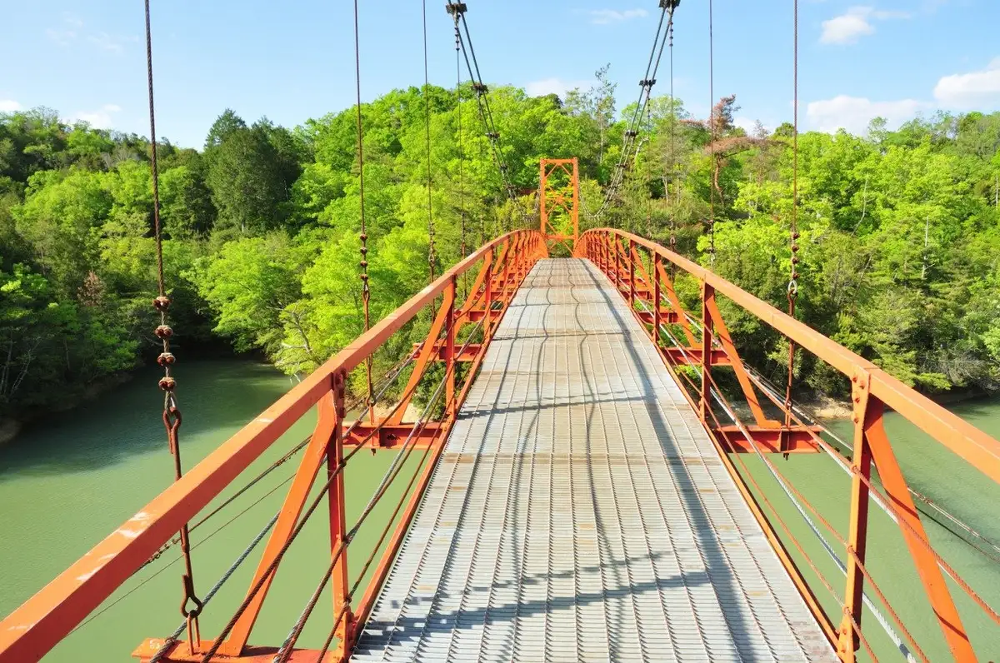
Stay
ホテルルートイン橋本
Hotel Route Inn Hashimoto
Hotel in Shiwaki, Hashimoto with business travelers.
仁昌堂ホテル
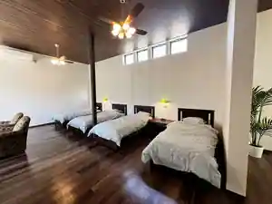
Hitoaki Do Hotel
ホステルイン 橋本
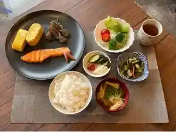
Hosuteruin Hashimoto
Inn in Kosada, Hashimoto; 1-minute walk from Hashimoto Station.
～真田昌幸・幸村父子の隠れ宿～紀伊見荘
~ Sanada Masayuki Yukimura Fushi No Kakure Yado ~ Ki Ken So
やどり温泉 いやしの湯
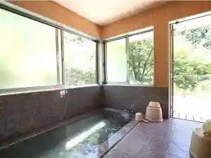
Yadori Onsen Iyashino Yu
Inn at Yadori Onsen in Kitayado, Hashimoto.
Dining
和dining cafe 靖浩
Wa dining cafe Yasuhiro
麺匠 中うえ 橋本店
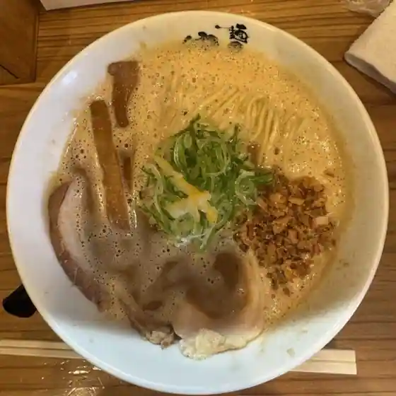
Men Takumi Naka Ue Hashimoto
麺や 希りゅう
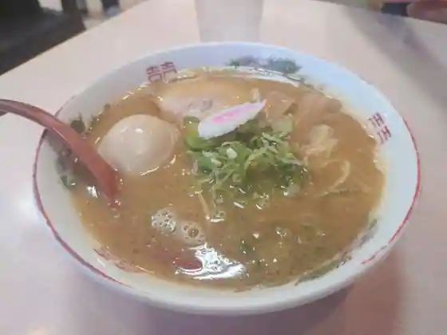
Men Ya Mare Ryu
卵庵 はしたま
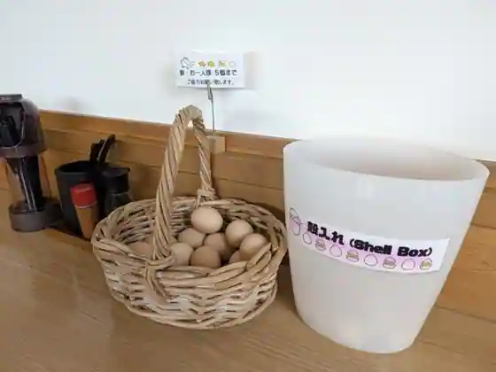
Tamago Iori Hashitama
コロンブス
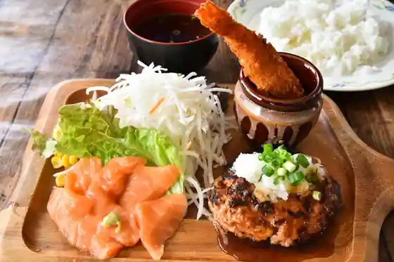
Koronbusu
浪花堂
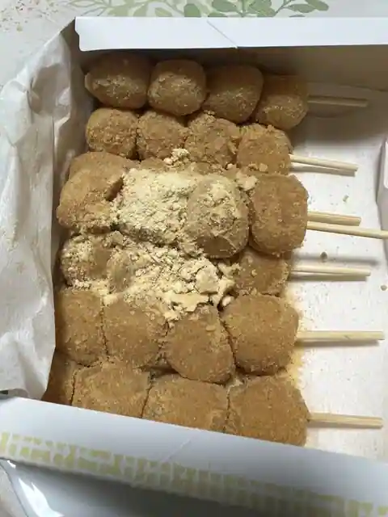
Naniwa Do
Cafe'葛城館
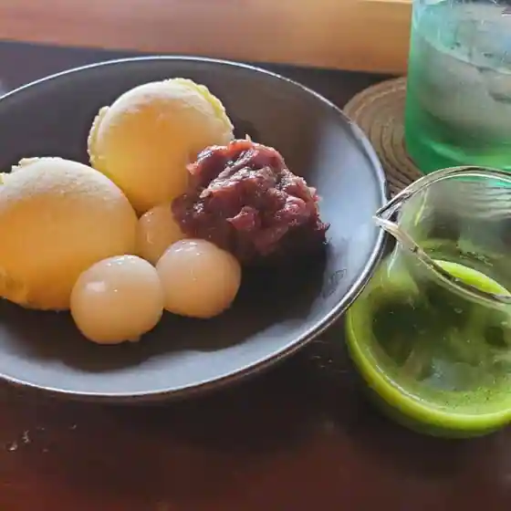
Cafe' Katsuragi Kan
天然温泉ゆの里
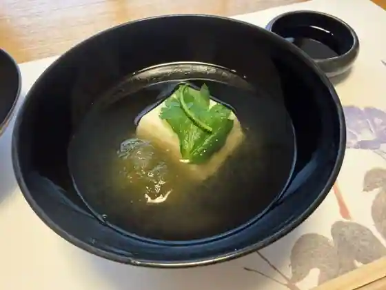
Tennen Onsen Yuno Sato
チャンピオン
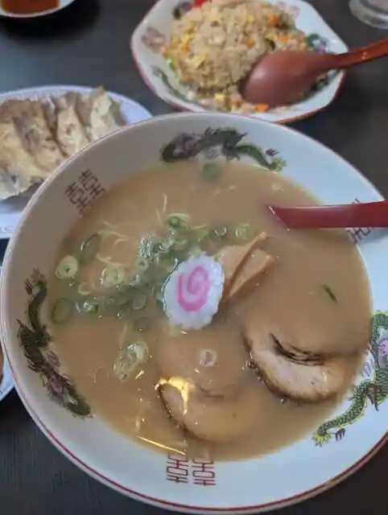
Chanpion
酒と飯 Mitu食堂
Sake To Meshi Mitu Shokudo
cafe rest LOG
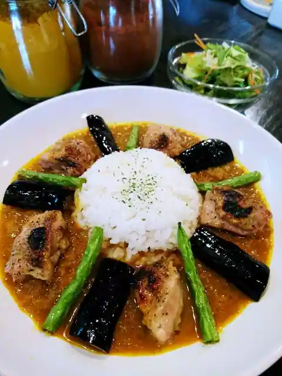
cafe rest LOG
にしき
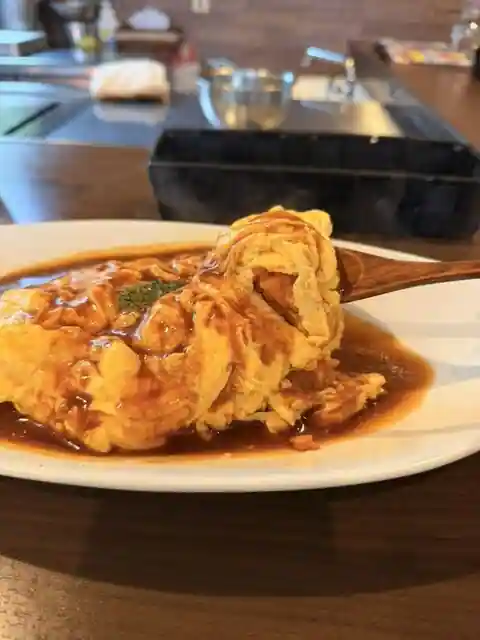
Nishiki
卵菓 ハシタマ
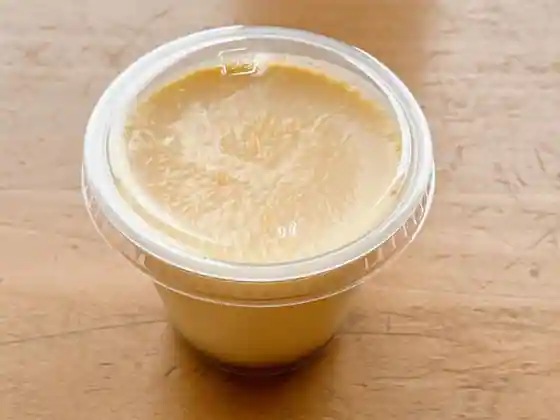
Tamago Ka Hashitama
ジャヤ カフェ
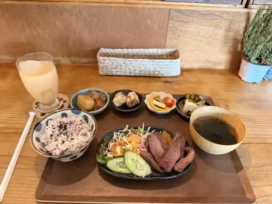
Jaya Cafe
焼肉花川
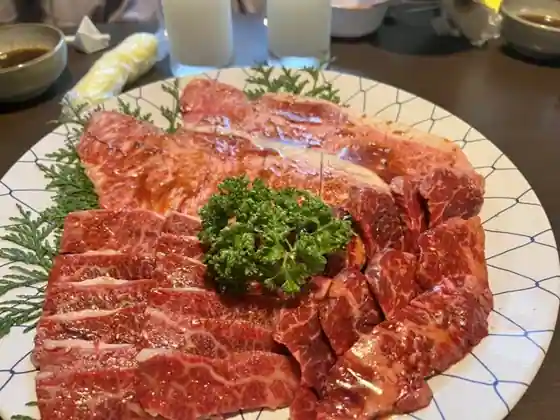
Yakiniku Hanakawa
麺や えん
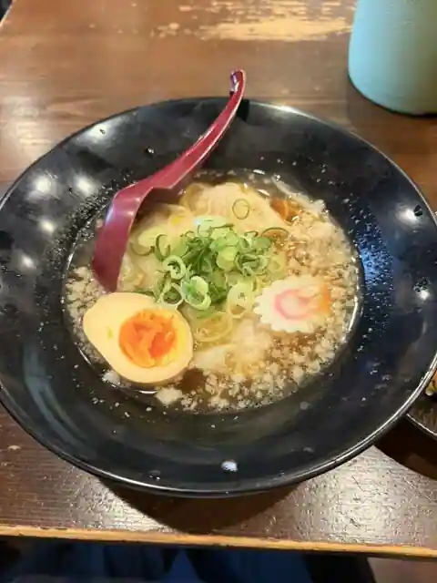
Men Ya En
裕福
Yufuku
LOG CAFE It's
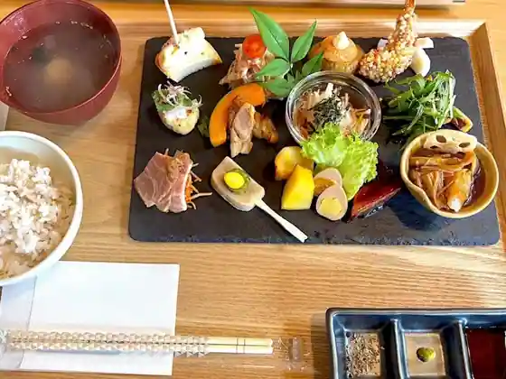
LOG CAFE It's
紀伊見荘
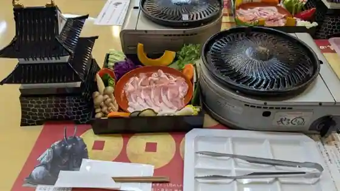
Ki Ken So
力うどん
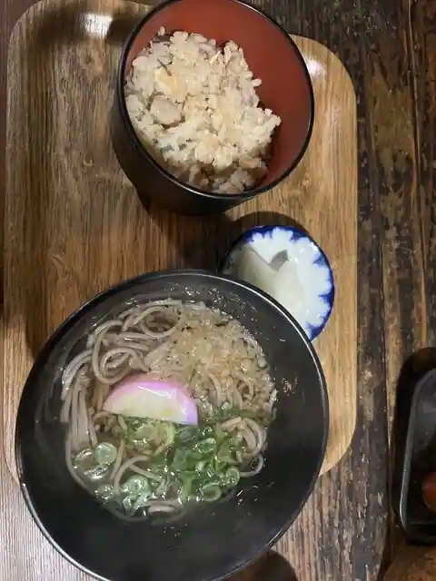
Chikara Udon
やどり温泉いやしの湯「おかん's Cafe」
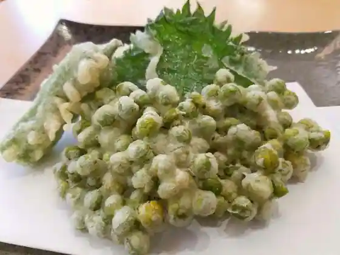
Yadori Onsen Iyashino Yu (Okan 's Cafe)
COUNTRY-SIDE
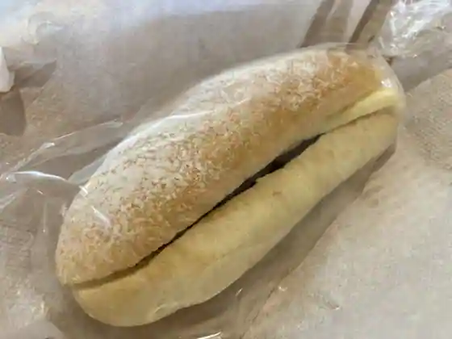
COUNTRY-SIDE
中華そば津津
Chuka Soba Tsutsu
紀の川そば
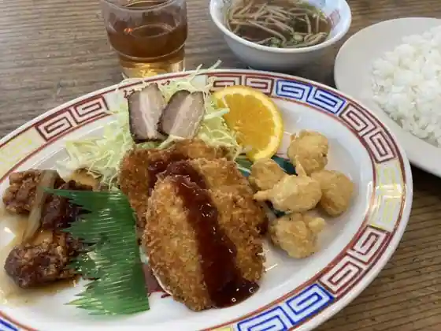
Ki No Kawa Soba
Sights
Hashimoto Eko Park Ki Bo Village
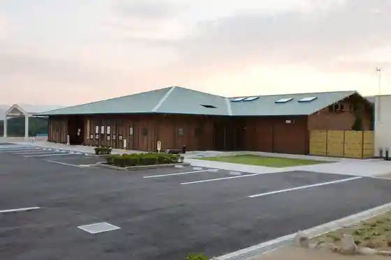
Tamagawa Kyo
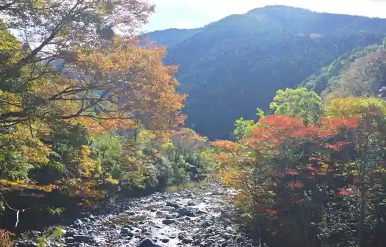
Manyo Village
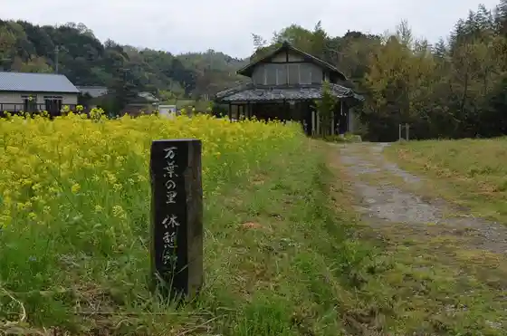
Sugi Village Park
Fudo Yama no Kyoseki
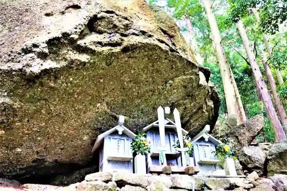
Hashimoto Jibasangyo Shinko Center (Tachi Yori Tokoro)
Hashimoto Koiki Tourist Information
Daiyamondotoreiru